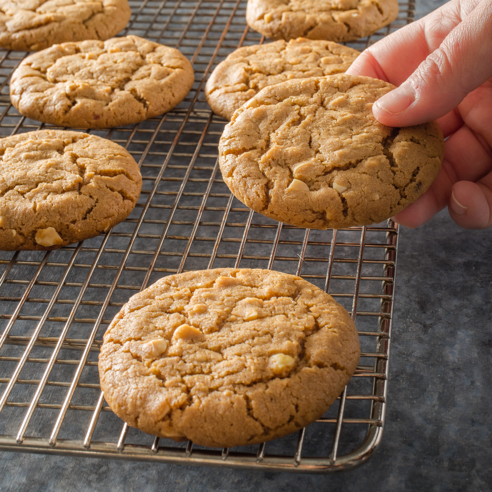

Peanut Butter Cookie Recipe

THE BEST PEANUT BUTTER COOKIE RECIPE EVER
Peanut Butter Cookies, who could resist them? I’ve loved peanut butter cookies as long as I can remember and they’ll always be one of my favorites. So of course it only makes sense that I share my idea of the best peanut butter cookie recipe.
These easy homemade cookies are soft and chewy, packed with peanut butter flavor, and they’re super delicious dunked in milk!
Ingredients
- All-purpose flour
- Baking soda and baking powder
- Salt
- Unsalted butter
- Granulated sugar and Brown Sugar
- Creamy Peanut butter
- Egg
- Vanilla Extract
Baking Directions
Preheat oven, prepare baking sheet: Preheat oven to 350 degrees F. Line two 18 by 13-inch baking sheets with silicone baking liners or parchment paper.
Whisk dry ingredients: In a medium mixing bowl whisk together flour, baking soda, baking powder, and salt. Set aside.
Cream butter and sugars: In the bowl of an electric stand mixer fitted with the paddle attachment cream together butter, granulated sugar, and brown sugar until combined.
Mix in peanut butter then blend in egg and vanilla.
Blend flour mixture into butter mixture: With mixer set on low speed slowly add in flour mixture and mix just until combined.
Scoop and shape: Scoop dough out and roll into balls (30 grams each or nearly 2 Tbsp) then place on baking sheets spacing them 2-inches apart.
Flatten with a fork: Using a long pronged fork flatten cookies slightly then turn fork going opposite direction and flatten just slightly again (it should create that criss cross pattern).
Bake: Bake cookies in preheated oven, one sheet at a time, for about 9 minutes (cookies will appear pale and slightly under-baked, they’ll continue to cook slightly as they cool).
Cool: Let cool on baking sheet 5 minutes then transfer to a wire rack to cool completely. Store cookies and an airtight container.